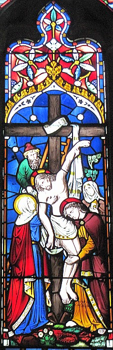
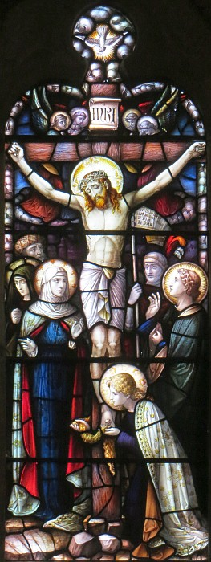

La Bouonne Nouvelle s'lon Matchi: 27
 Quand vînt l'matîn, touos les grands prêtres et les sénateurs parmi les Juis lus rassemblyîdrent à seule fîn d'lus aviser coumme tchi mett' Jésû à mort. Et quand i' l'eûdrent amathé, i' l'emm'nîdrent et l'mîndrent entre les mains d'Ponce Pilate, lus gouvèrneux. Dans l'entrétant Judâ, tchi l'avait trisonné, vit qu'i' 'tait condamné et eut r'morche dé chein qu'il avait fait; et quand i' r'baillit les trente pièches d'argent ès grands prêtres et sénateurs, i' lus dit, "J'fis du mêché quand j'trisonnis l'sang înnouothant."
Quand vînt l'matîn, touos les grands prêtres et les sénateurs parmi les Juis lus rassemblyîdrent à seule fîn d'lus aviser coumme tchi mett' Jésû à mort. Et quand i' l'eûdrent amathé, i' l'emm'nîdrent et l'mîndrent entre les mains d'Ponce Pilate, lus gouvèrneux. Dans l'entrétant Judâ, tchi l'avait trisonné, vit qu'i' 'tait condamné et eut r'morche dé chein qu'il avait fait; et quand i' r'baillit les trente pièches d'argent ès grands prêtres et sénateurs, i' lus dit, "J'fis du mêché quand j'trisonnis l'sang înnouothant."
I' lî rêponnîdrent, "Tch'est qué chenna a à faithe auve nous? Ch'est d'tén affaithe à té!" Là-d'ssus i' jouôtit les sou dans l'templ'ye et s'en fut et s'pendit.
Mais les grands prêtres, quand i' ramâssîdrent les sou, dîdrent, " I' n'nos est pon alloué d'les mett' dans l'tronc du Templ'ye, viyant qu'ch'est l'prix d'sang." Et quand i' lus 'taient avisés entouor la tchestchion, il en acatîdrent un clios à un potchi pouor y'entèrrer des horsains, et né v'là pouortchi qu'chu clios-là jusqu'au jour d'aniet a nom Haceldama, tchi veurt dithe lé clios au sang. Et tout chenna fut l'adgèvement des patholes du prophète Jérémie: "Il ont r'chu les trente pièches d'argent tchi 'taient l'prix du chein tch'avait 'té mîns à prix, et d'tchi il' avaient fait marchi auve les fis d'Israël. Et i' l'ont bailli pouor en acater l'clios à un potchi, coumme lé Seigneu m'a c'mandé."
Assa Jésû fut m'né l'avant au gouvèrneux, et l'gouvèrneux l'tchestchionnit en ches patholes-chîn: "Es-tu l'Rouai des Juis?"
Jésû lî rêponnit, "Tu l'dis."
Et coumme i' 'tait atchûsé par les grands prêtres et les sénateurs, i' n'rêponnit rein.
Là-d'ssus Pilate lî dit, "Ch'est-i' qu'tu n'ouais pon d'combein d'choses qu'ches gens-là t'atchûsent?"
Mais i' n'rêponnit rein à tout chein qu'i' put lî dithe; dé sorte qué l'gouvèrneux en fûsse divèrsément êmèrvilyi. Assa l'gouvèrneux avait couôteunme au jour d'la fête dé Pâque dé libéther l'chein des prisonnièrs qué l'peupl'ye lî d'mandait. Et à chu temps-là y'en avait iun tchi 'tait d'èrnom et tch'avait nom Bar-Abba. Coumme i' 'taient touos assembliés, Pilate lus dit, "Létché qu'ou voulez qué j'èrlâque: Bar-Abba ou Jésû mênommé l'Christ?" Car i' savait bein qué ch'tait par eune hie qu'i' l'avaient mîns entre ses mains. Dans l'entrétant, coumme i' 'tait assis sus sa grande tchaîthe, sa bouonnefemme env'yit lî dithe, "N'ai rein à faithe auve chu juste-là, car aniet j'ai ieu dans un rêve un divèrs torment à cause dé li."
Mais les grands prêtres et les sénateurs pèrsuadîdrent au peupl'ye dé d'mander Bar-Abba, et d'mett' à mort Jésû. Quand don l'gouvèrneux lus eut dit, "Létché des deux voul'-ous qué j'vos r'lâque?" i' lî rêponnîdrent, "Bar-Abba!"
Pilate lus dit, "Tch'est qué j'f'thai don d'Jésû mênommé l'Christ?"
I' rêponnîdrent touos ieux, "À la crouaix!"
Lé gouvèrneux lus dit, "Mais tchi ma qu'il a fait?"
Et i' lus êcantîdrent à braithe acouo pus haut, "À la crouaix!"
Pilate rêalîsit qu'i' n'y gângnait rein, mais qu'lé brit craîssait d'pus en pus, et il env'yit qu'si dé l'ieau dans tchi qu'i' s'lavit les mains en dîthant l'avant au peupl'ye, "J'sis înnouothant du sang d'chu juste-chîn. La bliaûme en s'sa à vous."
Et tout l'peupl'ye lî rêponnîdrent, "Qu'san sang r'tchait sus nous et sus nos êfants."
Là d'ssus i' lus r'lâtchit Bar-Abba, et quand il eut fait fouôter Jésû, i' l'èrmînt entre lus mains pouor êt' clioué à la crouaix. Les soudards du gouvèrneux auprès chenna m'nîdrent Jésû à la cohue, et là, quand il' eûdrent assemblié toute la dgaîngue, i' lî halîdrent ses habits, et l'rabilyîdrent d'un manté d'êcarlate, et quand il eûdrent teurtchi eune couronne d'êpîngnes, i' la pliaichîdrent sus sa tête, auve un ros dans sa main dêtre. Et quand i' lus fûdrent agenouollis l'avant à li, i' lus motchîdrent dé li, comme chennechîn: "Hèque lé rouai des Juis!" Et i' li'êcopîdrent à la fache, et prîndrent lé ros qu'i' t'nait et li'en tapîdrent la tête. Auprès l'aver abafoué d'même, i' lî halîdrent chu manté d'êcarlate-là, et quand i' li'eûdrent èrmîns ses habits, i' l'emm'nîdrent pouor lé cliouer à la crouaix.
Coumme i' lus dêhalaient, il' achîtrîdrent un houmme dé Cythène tch'avait nom Simon et qu'i' forchîdrent dé porter la crouaix d'Jésû. Et quand i' vîndrent à l'endrait tch'avait nom Golgotha, et v'là tchi veurt dithe l'endrait où'est qu'est la cranne, i' lî baillîdrent à baithe du vîn mêlé d'fyi, mais quand il en gouôtit, i' n'voulit pon en baithe.

Quand i' l'eûdrent clioué à la crouaix, i' chârîdrent ses habits entre ieux, et les halîdrent au sort, et chenna pouor qu'chutte pathole du prophète fûsse accomplyie: "Il' ont châré entre ieux mes habits, et ont halé ma robe au sort." Et coumme il' y 'taient assis, i' l'dgettaient.
I' pliaichîdrent étout au d'ssus d'sa tête la cause dé sa condamnâtion êcrite en ches mots-chîn: "Ch'est Jésû, l'Rouai des Juis."
En même temps nou-s'avait clioué à la crouaix auve li deux voleurs, l'iun à sa dêtre et l'aut' à sa s'nêtre, et les cheins tchi pâssaient l'abafouaient en châtchant lus têtes et lî dîthaient, "Té tch'achouêm'thais l'Templ'ye et tchi l'èrbâtithais en trais jours, pouortchi qu'tu n'té saûve pon té-même? S'tu'es l'Fis dé Dgieu, d'vale d'la crouaix!"
Les grands prêtres l'abafouaient étout auve les êcrivains et les sénateurs, et i' dîthaient, "Il a saûvé l's aut's, et i' n'peut pon s'saûver li-même. S'il est l'Rouai d'Israël, qu'i' d'vale achteu d'la crouaix, et j'craithons en li. I' met sa fianche en Dgieu; si dont Dgieu l'aime, qu'i' l'dêpaûque en l'heu, viyant qu'i' dit, 'J'sis l'Fis d'Dgieu.'"
Les voleurs tchi 'taient clioués ès crouaix auve li, lî faîthaient ieux étout les mêmes èrproches.
Assa d'pis la siêxième heuthe du jour jusqu'à la neuvième toute la tèrre 'tait couèrte dé nièrcheu. Et d'vièrs la neuvième heuthe, Jésû fit un grand brai et i' dit, "Eli, Eli, lamma sabacthani!" V'là tchi veurt dithe: man Dgieu, man Dgieu, pouortchi qu'tu m'as laîssi ès êcouettes? Tchiqu's'uns des cheins tchi 'taient là, quand i' l'ouîdrent braithe dé même, dîdrent, "Il appelle Elie!" Et d'un co iun dg'ieux s'en fut quédaine prendre eune êponge qu'i' trempit dans du vinnaigre, la pitchit sus eune tigue, et l'i'offrit à béthe.
L's aut's dîdrent, "Arrête un mio, viyons si Elie veindra l'dêpaûtchi!" Mais Jésû, quand il eut fait acouo un grand brai, rendit l'âme. En même temps l'vouaile du Templ'ye s'êtrilyit en deux d'pis l'haut jusqu'en bas; la tèrre tremblyit; les rotchièrs lus fendîdrent; les s'pultuthes lus ouvrîdrent; et un fliotchet d'corps des saints tchi 'taient dans l'sommé d'la mort ressuscitîdrent et, quand i' lus fûdrent dêtânés d'lus tombes, auprès sa résurrection, i' vîndrent dans la sainte ville, et fûdrent veus d'un amas d'monde.
Lé chent'nyi et les cheins tchi 'taient auve li pouor garder Jésû, quand il' eûdrent veu l'trembliément d'tèrre et tout chein tchi s'pâssait, fûdrent prîns d'un grand êffrai et dîdrent, "Ch't houmme-chîn 'tait dé vrai l'Fis dé Dgieu!"
Y'avait étout là l'tou eune dgaîngue dé femmes tchi lus gardaient à l'êcart et tch'avait siévi Jésû d'pis la Galilée et tchi prannaient souain d'li. Parmi ches'-là y'avait Mathie Magdalène, Mathie méthe dé Jînmîn et d'Joseph, et la méthe ès fis d'Zébédé.
D'vièrs l'sé, un r'chard d'la ville d'Arimathée, tch'avait nom Joseph et tch'était li étout un discipl'ye dé Jésû, s'en fut achîtrer Pilate et quand il eut d'mandé l'corps dé Jésû, Pilate quémandit qu'nou l'î baîllîsse. Joseph don, quand il eut prîns l'corps, l'abotit dans un blianc lîncheu, l'mînt dans sa cotte, qu'i' n'avait pon acouo fait sèrvi et qu'il avait cârrié dans l'rotchi. Un co qu'il avait aboulé un gros rotchi à l'entrée d'la cotte, i' s'en fut. Mathie Magdalène et l'aut' Mathie 'taient là, assises auprès d'la cotte. L'lend'main, tchi 'tait l'jour auprès l'chein qu'nou-s'appelle la graiethie du sabbat, les grands prêtres et les Pharisiens lus rassemblyîdrent et lus en fûdrent achîtrer Pilate. I' lî dîdrent, "Seigneu, I' nos est v'nu à l'esprit qu'chu peûle-là avait dit, quand i' 'tait acouo vivant, 'Auprès trais jours j'm'èrsouôlév'thai!' C'mandez don qu'la cotte sait gardée jusqu'au traîsième jour dé crainte qué ses discipl'yes n'y veingent gaffer san corps, et n'dichent au monde, 'Il est souôl'vé des morts!'. Ch'est en tchi chutte drein embliût'tie s'sait piéthe qué la preunmiéthe."
Pilate lus dit, "Ous avez eune garde. Allez! Faites-la garder coumme ou voulez."
I' lus en fûdrent don, et pouor asseûther la cotte il' en scêllîdrent lé rotchi et y mâtîdrent eune garde.
Vèrsets 33-54

I' vîndrent à un endrait tch'avait nom Golgotha (v'là tchi veurt dithe la carre d'la cranne). Là il aveignîdrent du vîn mêlé d'auve du fyi, mais ayant gouôté, i' n'en voulit d'aut'. Assa un co qu'les soudards l'avait clioué à la crouaix, i' jouîdrent entré ieux pouor loter ses habits (chennechîn s'adonnit s'lon chein qu'lé prophète avait dit: "I' lotîdrent mes habits entré ieux et pattîdrent pouor mes hardes.") I' lus assiévîdrent là et gardîdrent quart sus li. Au d'ssus d'sa tête il' affichîdrent l'atchûsâtion contre li en ches patholes: "Ch'tî-chîn est Jésû, Rouai des Juis". Y'avait deux voleurs clioués à la crouaix des deux bords d'li, l'iun à dêtre et l'aut' à s'nêtre. Les pâssants lé traitaient dé touos les noms en châtchant la tête et dithant, "Té tchi dis qu'tu'abatt'tais l'templ'ye et l'èrbâtithais en trais jours, saûve-té don! Dêclioue-té d'ta crouaix, si tu'es l'fis du Bouôn Dgieu!"
Et les grands prêtres, les maît's d'la louai et les grôsses têtes en fîdrent dé même et l'abafouîdrent. "Il a saûvé d'aut's," qu'i' dîdrent, "mais i' n'peut pon s'saûver, li! Li tch'est l'Rouai d'Israël? Qu'i' s'dêclioue d'la crouaix épis j'craithons en li, dgia! I' s'fyie au Bouôn Dgieu. Qu'lé Bouôn Dgieu l'libéthe achteu s'i' l'veurt, ch'est en tchi i' dit, 'Mé j'sis l'Fis du Bouôn Dgieu.'" Et les voleurs tchi 'taient clioués à la crouaix au ras d'li lé traitaient d'touos les noms étout.
D'la siêxième jusqu'à la neuvième heuthe (ch'est à dithe dé neuf heuthes au matîn jusqu'à trais heuthes dé l'arlévée), la nièrcheu couvrait tout l'pays. Et dans les trais heuthes dé l'arlévée Jésû s'êbriyit à haûteu d'tête "Eli, eli, lama sabachthani?", v'là tchi veurt dithe: "Man Dgieu, man Dgieu, pouortchi qu'tu m'as dêlaîssi?"
Quand tchiqu's'uns des cheins mâtés là l'tou ouîdrent chennechîn, i' dîdrent, "V'là qu'i' crie à Élie!" Et dêliêment iun dg'ieux couothit qu'si eune êponge, lé trempit d'vîn, l'apitchit sus eune ravaûle et l'aveingnit à Jésû pouor qu'il en bûsse.
Mais l's aut's dîdrent, "Laîsse-lé. J'vèrrons achteu si Élie s'en veint l'saûver." Épis Jésû s'êbriyit acouo eune fais à haûteu d'tête et lâtchit san soûffl'ye.
Et au même moment l'ridgeau du sanctuaithe au templ'ye fut trîlyi en deux dé haut en bas. La tèrre tremblyit et les rotchièrs cratchîdrent. Les fôsses fûdrent ouvèrtes et les corps dé bein d'saints fûdrent souôl'vés. I' lus dêhalîdrent dé lus tombes et auprès qu'Jésû fûsse souôl'vé des morts i' lus en fûdrent partoute la ville et géthîdrent l'avant à un tas d'monde.
Lé chent'nyi et les cheins acanté li, tchi 'taient là pouor garder Jésû, fûdrent êpeûthés quand i' vîdrent lé trembliément d'tèrre et tout chein tchi s'tait pâssé et i' dîdrent, "N'y' pon d'doutanche qué ch'tî-chîn fûsse lé Fis du Bouôn Dgieu!"
Vèrset 19
Quand i' 'tait assis sus l'banc du juge, sa bouonnefemme lî'envyit un m'sage: "N'ai rein à faithe auve chu juste houmme, car j'ai 'té bein gênée aniet en rêvant d'li."
Viyiz étout:
- La Bibl'ye
- La Bouonne Nouvelle s'lon Matchi, Chapitre 1, vèrsets 1 à 17
- L'Êvangile sélon St.-Matchi: chapitre 1 versêts 18 à 23
- L'Êvangile sélon St.-Matchi: chapitre 1 vèrsets 18 à 23 - eune aut' vèrsion
- La Bouonne Nouvelle s'lon Matchi: 2
- L'Êvangile sélon St.-Matchi: chapitre 2 versêts 1 à 11 - eune aut' vèrsion
- La Bouonne Nouvelle s'lon Matchi, Chapitre 2, vèrsets xii-xvi
- La Bouonne Nouvelle s'lon Matchi, chapitre 4
- Lé Sèrmon sus La Montangne
- La Bouonne Nouvelle s'lon Matchi: 8
- La Bouonne Nouvelle s'lon Matchi: chapitre 8 vèrsets v-xiii
- La Pathabole du S'meux
- La Bouonne Nouvelle s'lon Matchi: 10
- La Bouonne Nouvelle s'lon Matchi: 11
- La Bouonne Nouvelle s'lon Matchi: 12
- La Bouonne Nouvelle s'lon Matchi, Chapitre 13, vèrsets 54-58
- La Bouonne Nouvelle s'lon Matchi, Chapitre 14, vèrsets 15-26
- St. Matchi, Chapitre 16, 18ième vèrset
- La Bouonne Nouvelle s'lon Matchi - chapitre 19, vèrsets 16-26
- La Bouonne Nouvelle s'lon Matchi, Chapitre 20, vèrsets 1-16
- La Bouonne Nouvelle s'lon Matchi, Chapitre 21, vèrsets 1-11
- Lé mithacl'ye du fidgi s'lon Matchi
- La Bouonne Nouvelle s'lon Matchi, Chapitre vîngt-deux, vèrsets 15-22
- La Parabole des dgiez Vièrges
- La Pathabole des talents
- La Bouonne Nouvelle s'lon Matchi, Chapitre 25, vèrsets 31-46
- La Bouonne Nouvelle s'lon Matchi , Chapître 26, vèrsets 1-30